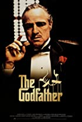

MOVIE GALLRY

THE GODFATHER
The aging patriarch of an organized crime dynasty in postwar New York City transfers control of his clandestine empire to his reluctant youngest son.
Release Date: 14 March 1972
Director: Francis Ford Coppola
Cast: Marlon Brando
Language: English

SCHINDLER'S LIST
In German-occupied Poland during World War II, industrialist Oskar Schindler gradually becomes concerned for his Jewish workforce after
Release Date: 10 May 1973
Director: Steven Spielberg
Cast: Ben Kingsley
Language: English

RAGING BULL
The life of boxer Jake LaMotta, whose violence and temper that led him to the top in the ring destroyed his life outside of it. gradually becomes concerned
Release Date: 21 April 1980
Director: Martin Scorsese
Cast: Robert De Niro
Language: English

CASABLANCE
A cynical expatriate American cafe owner struggles to decide whether or not to help his former lover and her fugitive husband escape the Nazis in French
Release Date: 28 decmber 1945
Director: Michael Curtiz
Cast: Humphrey Bogart
Language: English
CITIZEN KANE
Following the death of publishing tycoon Charles Foster Kane, reporters scramble to uncover the meaning of his final utterance: 'Rosebud.'
Release Date: 6 March 1941
Director: Orson Welles
Cast: Agnes Moorehead
Language: English